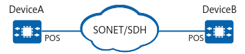

A packet over SONET/SDH (POS) interface is a physical interface that can directly transmit IP data services over a high-speed transmission channel provided by a synchronous optical network (SONET) or synchronous digital hierarchy (SDH).
POS interfaces provide high-speed, reliable, and point-to-point IP data connections in compliance with the physical-layer transmission standard SONET/SDH.
